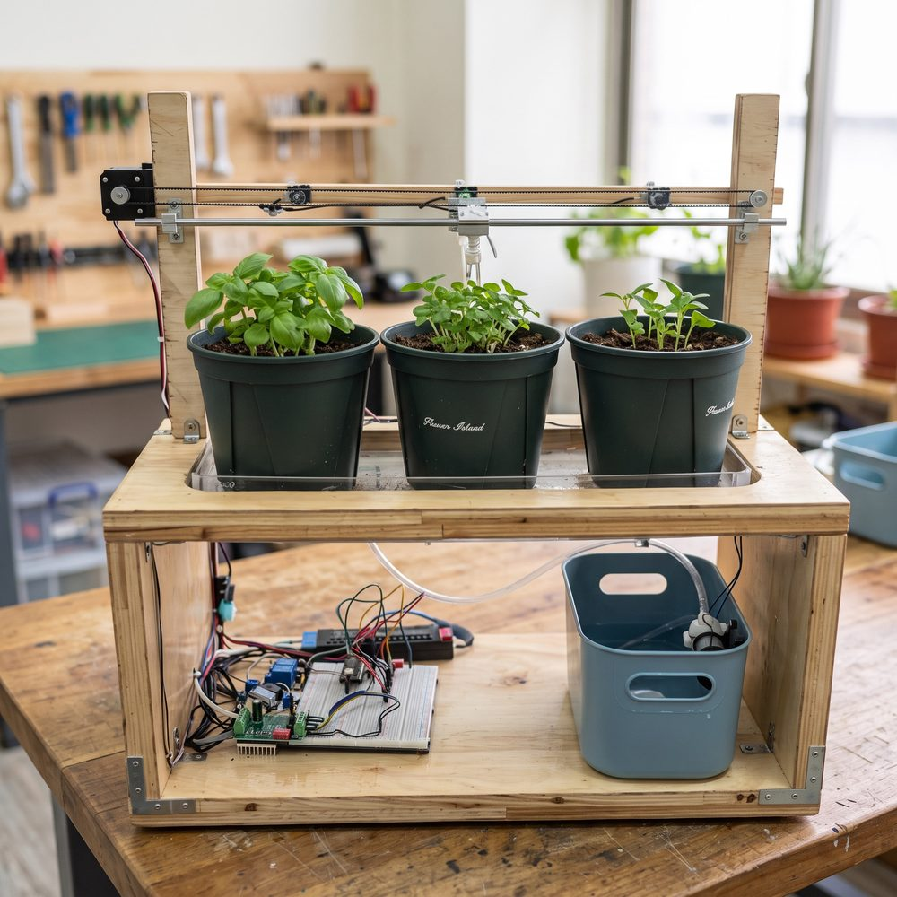
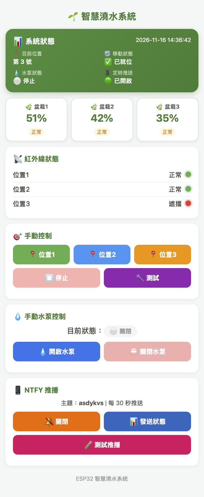

讓綠意
蔓延吧
ESP32 智慧自動化盆栽澆水系統
自動定位・濕度感測・遠端控制
專題成果簡報

專題動機與簡介
從日常照護問題出發，讓澆水變得更智慧
忘記澆水
生活忙碌或外出時，容易忽略盆栽的水分需求。
每盆需求不同
不同盆栽的土壤乾燥程度不一樣，不適合一律定時澆水。
澆水不易拿捏
澆水不足可能缺水；澆水過多也可能造成積水與根部問題。
想達成的目標
把照顧多盆植物這件事，交給自動化系統
自動判斷
偵測每盆土壤濕度，自動找出需要澆水的盆栽
一管三盆
單一出水口移動到各盆，不必每盆各配水泵
遠端掌握
手機或電腦即時查看狀態，也能手動控制
主動通知
澆水與重要事件即時推播提醒，不必一直盯著看
七大核心功能
自動偵測、定位、澆水，並可遠端監控與手動介入
自動偵測濕度
持續監測三盆土壤，過乾即啟動
自動移動定位
滑塊移至該盆上方並精準停位
智慧循環澆水
澆 10 秒、等 30 秒，再重新偵測
遠端網頁監控
手機或電腦查看濕度、位置與水泵
手動控制
網頁手動移動滑塊、開關水泵
安全防呆
移動時水泵鎖定，抽水時不移動
即時推播
每 30 秒狀態報告，異常即時通知
照顧多盆植物
手機即時推播通知
讓使用者不必一直開啟網頁，也能掌握系統狀況

定時狀態回報
系統每 30 秒傳送一次狀態資訊。
事件通知
開始澆水、澆水完成或發生異常時，推播提醒使用者。
通知內容
包含目前位置、水泵狀態，以及三盆植物的濕度資訊。
系統架構
ESP32 作為控制核心，整合感測、移動、供水與網路功能
網頁伺服器・Wi-Fi
軟體與網路技術
控制程式、網頁介面與推播服務串接
Arduino IDE
撰寫程式並上傳至 ESP32。
HTML / CSS / JavaScript
設計手機與電腦可使用的網頁操作介面。
ESP32 網頁伺服器
提供即時狀態查詢與手動控制功能。
Wi-Fi 連線
讓 ESP32 與使用者裝置透過網路交換資訊，並以 NTP 同步時間。
ntfy 推播服務
定時回報狀態，並在澆水或異常時通知使用者。
Blynk 手機儀表板
提供手機端儀表板，遠端查看狀態與操作。
自動運作流程
由濕度偵測開始，依序完成定位、澆水與再次確認
偵測
讀取三盆植物的土壤濕度
判斷
找出低於設定值的盆栽
定位
滑塊移動至目標盆栽位置
澆水
啟動水泵，澆水約 10 秒
等待
回到中間位置，等待約 30 秒
再檢測
重新讀取濕度，必要時再次澆水
遠端網頁監控與手動控制
透過網頁與 Blynk 手機儀表板掌握系統狀態，必要時可人工介入


即時狀態
時間、目前位置、滑塊移動與水泵狀態。
盆栽資訊
顯示各盆濕度、ADC 數值與乾燥／正常狀態。
手動操作
可指定位置 1～3、停止滑塊，並手動開關水泵。
問題與解決
從實際照護的困擾，對應到系統的設計
每盆需水量不同
定時澆水容易過多或不足
各盆獨立判斷
每盆偵測自己的濕度，只替偏乾的盆栽澆水
一次澆水難以拿捏
澆太多會積水，澆太少仍然缺水
澆水後再確認
澆水約 10 秒、等待約 30 秒，再重新偵測是否達標
移動與出水同時發生
出水位置還在移動，水可能澆錯地方
動作安全互鎖
水泵運轉時滑塊不移動，滑塊移動時水泵不出水
人不在現場
看不到植物狀況，也無法即時處理
網頁監控與手機推播
遠端查看狀態與手動控制，重要事件由 ntfy 通知
實測結果
依海報紀錄，觀察約 1 分鐘內三盆植物的濕度變化
| 時間 | 植物1 | 植物2 | 植物3 |
|---|---|---|---|
| 15:47:57 | 83% | 82% | 80% |
| 15:48:30 | 93% | 90% | 88% |
| 15:49:03 | 95% | 92% | 91% |
結論與未來展望
讓科技協助照顧植物，讓綠意持續延伸
本專題結合感測技術、自動化控制與網路通訊，完成一套能依照土壤濕度移動定位並自動澆水的智慧系統。
- 一台裝置照顧多盆植物，減少逐盆檢查的負擔
- 透過網頁與推播，讓使用者遠端掌握系統狀態
- 未來可擴充更多盆栽、人工光源與攝影機
- 開發中累積軟硬體整合與測試修正的經驗
蔓延吧謝謝聆聽